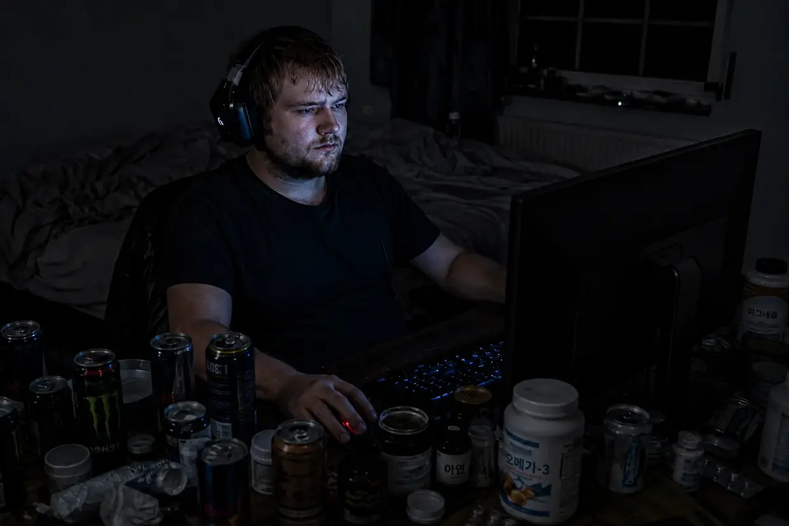
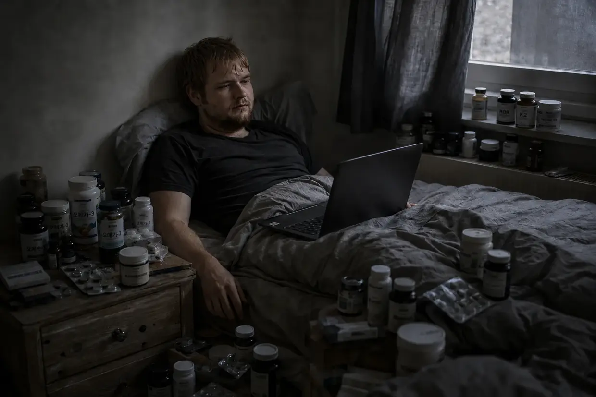

이명 지옥에서 벗어난 제 여정(요약편)
안녕하세요. Dustin Müller입니다.
지금 이 페이지에 들어왔다면 아마 당시 제가 갇혀 있던 것과 같은 지옥 한가운데 있을 겁니다. 9,000단어 분량의 제 회복 이야기를 자세히 읽고 싶다면 이곳에서 전체 이야기를 볼 수 있습니다.
빠른 답과 이야기의 큰 줄기를 찾는 분들을 위해, 제가 당시 철저한 논리와 바이오해킹으로 이명과 싸워 100%에서 0%까지 어떻게 낮췄는지 핵심을 압축해 들려드립니다.
1. 붕괴(2011년 가을)
저는 스물세 살이었고 더없이 건강했으며, 제 몸은 뭐든 견뎌 낼 줄 알았습니다. 프랑크푸르트의 테크노 클럽(U60)에서 베이스 스피커 바로 앞에서 보낸 단 한 번의 방문만으로 제 몸의 전원이 꺼졌습니다. 다음 날 아침, 처음에는 ‘고작’ 극심한 어지럼증과 귀가 먹먹해지는 압박감, 몸이 왼쪽으로 심하게 쏠리는 증상만 안고 깨어났습니다. 제 몸이 알아서 해결할 거라고 생각했습니다. 하지만 3일째 되는 날 진짜 괴물이 깨어났습니다. 갑자기 왼쪽 귀에서 지옥 같은 삐 소리와 쉭쉭거리는 소리가 울렸고, 오른쪽 귀에서는 희미한 삐 소리가 났습니다. 제 몸의 시스템은 완전히 무너졌습니다.
2. 시스템의 실패(“그 상태로 사는 법을 배우세요”)
공포에 휩싸인 저는 이비인후과를 전전했습니다. 당시 들은 답변은 얼굴을 후려치는 것 같았습니다. 의사들은 제 청력이 영구적으로 손상됐으며 이제 “그 상태로 사는 법을 배워야 한다”고 했습니다. 음악이나 ‘백색소음’으로 이명을 덮으라는 조언(마스킹/TRT)까지 받았고, 필요하면 항우울제를 쓰라는 제안도 받았습니다. 그 조언을 따라 계속 음악과 소음에 귀를 노출하자, 며칠 뒤 오른쪽 귀에 이미 있던 희미한 소리가 뚜렷하게 심해졌습니다.
돌이켜 보면 이 ‘마스킹’은 제게 두 번째 전면 붕괴를 일으킨 치명적인 조언이었습니다. 의사들을 맹목적으로 믿은 저는 차를 타고 학교에 가는 길에 ‘주의를 돌리려고’ 음악을 크게 들었습니다. 그것이 이미 텅 빈 세포에 가해진 결정타였습니다. 학교에서는 갑자기 끔찍한 소리 민감증(청각과민증)이 시작됐고, 현훈으로 시야가 공중제비를 돌 듯 빙글빙글 돌았으며, 귀 안에서 이온이 역류해 쌓이면서 평형기관이 완전히 침수됐습니다(메니에르병 양상의 증상). 저는 완전히 고립됐고 더는 집 밖으로 나갈 수 없었습니다.
3. 전환점: ‘가상의 소리’라는 주장에 대한 반증
그 뒤 한 이명 전문가는 몇 달이 지난 제 이명이 이제 뇌 속의 ‘가상의 소리’에 불과하다고 믿게 하려 했습니다. 하지만 우연한 사건이 그 반증을 보여 주었습니다. 대학병원에서 급성 외이도염을 치료받던 중, 한 의사가 소리가 큰 기계로 제 귀 안을 흡인했습니다. 바로 그 순간, 제 이명은 물리적으로, 바로 그 소음 자극에 맞춰 폭발하듯 치솟았습니다!
제게는 냉정할 만큼 분명한 논리였습니다. 심리적인 가상의 소리가 기계적 소음에 실시간으로 반응할 리는 없습니다. 제 이명은 고정된 것이 아니었습니다. 결함이 생긴 발원지는 여전히 귀 안에 있었고, 세포들은 새로운 소음이 닥칠 때마다 살려 달라고 비명을 지르고 있었습니다.
4. 정적의 프로토콜

효과가 없었던 코르티손 치료를 받느라 병원에 입원해 있었기 때문에, 두꺼운 거즈가 며칠 동안 제 귀를 바깥세상과 완전히 차단했습니다. 그곳에서 처음으로 소리가 실제로 줄어드는 것을 알아챘습니다. 저는 결단을 내렸고, ‘주의를 돌리라’는 의사들의 조언을 모두 무시한 채 거의 완전한 정적 속에서 몇 달을 보냈습니다. 음악도, 헤드폰도, 일상의 소음도 없었습니다. 그 결과 이명은 약 25% 줄었습니다. 물론 체감상입니다. 이명을 자로 잴 수는 없으니까요. 하지만 그 뒤 회복은 완전히 멈춰 섰습니다. 제 몸은 꼼짝없이 막혀 버렸습니다.
5. B12의 불씨(냉철한 추론)
결정적인 돌파구는 이번에도 가족에게 일어난 사건에서 찾아왔습니다. 아버지는 신경 질환 때문에 고용량 비타민 B12를 스스로 주사했고, 눈에 띄게 활력을 되찾았습니다.
그 순간 분석의 퍼즐이 맞아떨어졌습니다. 저는 15세부터 채식주의자였고, 게다가 오랫동안 심각한 만성 위염(위 점막 염증)을 앓았습니다. 참고로 이 위염은 그 직전에 미네랄 점토와 프로바이오틱스, 차전자피로 이겨 냈습니다. 의사도 틀릴 수 있다는 첫 번째 증거였습니다! 육류를 먹지 않는 식생활과 병든 위의 조합은 심각한 B12 결핍이 생기기에 완벽한 청사진이었습니다.
이 논리에 이끌려 저도 아버지에게 근육주사를 한 대 놓아 달라고 했습니다. 중요합니다. 의사의 관리 없이 이를 따라 하는 것은 분명히 권하지 않습니다. 다음 날 아침, 이명은 엄청나게 작아져 있었습니다. 약 40% 개선된 상태였습니다! 제가 내린 결론은 이랬습니다. B12는 ATP 생산의 주된 연료입니다. 제 세포들은 소음 때문에 마지막 ATP까지 태워 버린 상태였습니다. 주사가 세포에 에너지를 쏟아부었고, ‘세포 엔진’이 다시 시동을 걸었으며, 밤사이 제 몸은 복구 작업을 할 수 있었습니다.
6. 빠져 있던 건축 재료(세포막과 미엘린)
B12를 맞았는데도 이명은 하루가 지나면서 계속 다시 악화됐습니다. 소리가 다시 커졌습니다. 이유는 무엇이었을까요? 배터리는 충전됐지만 세포의 물리적 구조는 여전히 망가져 있었습니다.
또 한 번의 고통스러운 위기인 담도 산통을 겪으며 우연히 레시틴 과립을 알게 됐고, 그것이 산통에 도움이 됐습니다. 중요합니다. 담석이 있다면 반드시 의사의 관리를 받으세요. 이것은 급박한 상황에서 겪은 지극히 개인적인 경험일 뿐, 치료 조언이 아닙니다. 레시틴을 처음 먹은 지 불과 사흘 만에 갑자기 출발점보다 60~65% 개선된 상태가 됐습니다!
그 이면의 생물학은 제게 매혹적이었습니다. 레시틴(인지질)은 신경을 감싸는 미엘린층에만 중요한 것이 아니라, 모든 세포막을 이루는 핵심적인 주재료입니다. 클럽에서 받은 극심한 산화성 소음 스트레스 때문에 과부하된 청각세포의 벽은 말 그대로 부서지기 쉽고 새는 상태가 돼 있었습니다. 당시 제 설명 모델에 따르면 B12는 에너지(ATP)를 공급했고, 레시틴은 세포 시멘트 역할을 했습니다. 손상된 유모세포를 물리적으로 다시 밀봉하고, 청신경에 있다고 가정한 접촉 불량을 이어 붙이는 재료였습니다.
7. “융단폭격(Carpet Bombing)”(100% 승리)
병목을 완전히 뚫기 위해 가차 없는 분자교정의학적 ‘융단폭격’을 시작했습니다. 세포 복구에 필요한 모든 것을 제 몸에 공급했습니다.
- 당시 아직 약해져 있던 위를 우회하기 위한 고용량 비타민 B군(B1, B2, B3, B5, B6, B9, B12)
- 레시틴 30그램
- 아미노산과 최상급 오메가-3 오일 3그램
- 비타민 C, 미네랄(아연, 마그네슘)과 영양소 농축액(LaVita, Dr. Rath)
페이드아웃:

이처럼 대량으로 영양소를 공급하고 정적을 엄격히 지키자 흐름은 완전히 달라졌습니다. 아침마다 소리는 점점 작아졌고, 저녁에 다시 악화되는 시간은 짧아졌습니다. 그러던 어느 아침, 잠에서 깨어 확인하려고 귀마개를 귀 깊숙이 밀어 넣었는데 죽은 듯 완전하고 해방감을 주는 정적만이 있었습니다. 조광 스위치는 0에 놓여 있었습니다.
당시 제 설명 모델에 따르면 미엘린층은 복구됐고, 청각세포의 액틴 골격은 다시 세워졌으며, 뇌는 비상 증폭기를 껐습니다. 생물학이 이겼습니다.
스스로 주도권을 잡으세요
같은 어둠 속에 갇혀 있다면 희망이 있다는 것을 보여 드리고 싶습니다. 이 웹사이트에는 제가 스스로 발견한 생물학적 연관성과, 제 몸을 피해자 모드에서 끌어낸 바이오해킹 단계들을 정확히 기록했습니다. 이 정보를 어떻게 활용할지, 그리고 가능하면 담당 의사와 상의하면서 자신의 몸이 지닌 생물학을 어떻게 지원할지는 온전히 스스로의 손에 달려 있습니다. 제 길은 제 이야기입니다. 이제 자신의 이야기를 쓸 차례입니다.
중요한 안내:
이곳에서 읽는 내용은 제 개인적인 경험담입니다. 사람마다 몸도, 이야기도 다릅니다.

CFS로의 추락과 나이아신 플러시
치명적인 연쇄 반응: CFS로의 추락
첫 번째 이명에서 회복한 뒤 모든 게 괜찮아졌다고 생각한다면 틀렸습니다. 하지만 목숨이 위태롭다고 느낄 만큼 심각했던 이 붕괴는 이명 회복의 ‘대가’가 아니었습니다. 제 몸의 시스템을 완전히 균형 밖으로 밀어낸 치명적인 연쇄 반응이었습니다.
제 몸은 교묘하고 위험한 생물학적 역설에 갇힌 채 곧장 낭떠러지를 향하고 있었습니다. 저는 과도한 ‘오버드라이브’ 생활 방식으로 스스로를 채찍질해 끌어올렸습니다. 단기적으로는 에너지가 넘쳐 많은 일을 해낼 수 있었지만, 그 사이 제 비축분은 계속 타들어 갔습니다. 그런 생활이 장기적으로 제 몸의 시스템을 얼마나 고갈시키는지 알아차리지 못했습니다.
해소되지 않은 채 배경에 깔려 있던 트라우마와 코르티손의 화학적 후유증, 멈추지 않는 세포 과자극, 그리고 강력한 항생제와 위산 억제제로 완전히 망가진 장이 뒤섞여 마침내 제 발밑의 땅을 통째로 무너뜨렸습니다.
거기에 엡스타인-바 바이러스(감염성 단핵구증)까지 겹치자 제 몸의 시스템은 완전히 붕괴했습니다. 진단은 만성 피로 증후군(CFS)이었습니다. 저는 1년 넘게 거의 침대에서 일어나지 못했습니다. 미토콘드리아, 즉 세포의 발전소는 에너지 생산(ATP)을 거의 완전히 멈췄습니다.
6,800유로짜리 막다른 길과 제 가장 큰 오만

절박한 나머지 저는 닥치는 대로 모든 것을 사들였습니다. Life Extension이나 Thorne 같은 미국의 대형 업체 제품부터 비싼 비타민 C 주입 치료, KPU 치료와 호르몬 대체 요법까지 손을 댔습니다. 모의 고지대 훈련(IHHT)도 시도했지만 공황 때문에 중단해야 했고, CFS 전문 병원에 입원하기 직전까지 갔습니다.
그 한 해 동안 과장 없이 약 6,800유로를 이 미친 짓에 태워 버렸습니다. 결과는요? 완전히 0이었습니다. 제 몸은 그 어느 것도 받아들이지 못했습니다.
비극적이면서도 우스운 아이러니가 있습니다. 밤마다 조사하던 중 독일 회사 FitLine의 웹사이트를 발견했습니다. 정확히 4~5초 동안 머물며 겉모습을 본 뒤, 거만하게 생각했습니다. “유행하는 스포츠음료에 붙인 이 멍청한 이름은 대체 뭐야? 내게 필요한 건 강력한 약이지, 알록달록한 주스가 아니야.” 저는 100% 환불 보장을 완전히 놓쳤습니다. 제 자만심과 어설픈 지식 때문에 CFS 지옥에서 몇 달을 더 보내야 했습니다.
2013년: 나이아신 플러시와 세포의 재시동
2013년 가장 밑바닥에 이르렀을 때, 저는 98%쯤 침대에 누워 지냈습니다. 그때 YouTube가 어떤 하일프락티커(Heilpraktiker)의 영상을 제 피드에 띄웠습니다. 그는 모든 것을 믿기 힘들 만큼 전체적인 관점에서, 또 능숙하게 설명했습니다. 그가 불과 30킬로미터 떨어진 곳에 있다는 것을 알고 마지막 힘을 짜내 그곳까지 갔습니다. 어머니는 저를 또 다른 의사에게 데려다주는 일을 이미 단호하게 거부하고 있었습니다.
그는 분말을 물에 타 주었습니다. 선명한 주황색 액체였습니다. 얼마 전 제가 거만하게 쳐내 버린 바로 그 FitLine 세트였습니다!
6~8분 뒤 벌어진 일은 완전히 미친 일이었습니다. 엄청난 나이아신 플러시가 일어났습니다. 온몸이 극도로 뜨거워졌고, 피가 엄청난 기세로 혈관을 타고 온몸에 퍼졌으며, 피부는 붉어졌습니다. 1년이 넘는 시간 만에 처음으로 세포 속에서 진짜 물리적 에너지를 느꼈습니다.
진짜 문제는 이랬습니다. 제 몸은 세 겹의 차단 상태에 있었습니다. 첫째, 지속적인 스트레스와 항생제 때문에 위장관이 완전히 균형을 잃은 상태였습니다(장내 미생물 불균형). 둘째, 장에는 고형 캡슐을 소화하는 데 필요한 세포 에너지(ATP)가 말 그대로 없었습니다. 셋째, 혐기성 비상 전력 모드 때문에 세포가 지나치게 산성화돼 영양소를 거의 받아들이지 못했습니다. 접시는 가득 차 있었지만 저는 세포 단위로 굶고 있었습니다.
생체이용률이 높은 액상 영양소 세트가 이 심각한 흡수 장벽을 갑자기 돌파했습니다.
저는 자존심을 내려놓고 그날부터 제품들을 매일 빠짐없이 먹었습니다. 결과는 거의 비현실적이었습니다.
- 20일 뒤: 다시 평범하게 계단을 오를 수 있었습니다.
- 2개월 뒤: 침대에만 누워 지내던 상태가 사라졌고, 다시 힘차게 자전거를 탈 수 있었습니다.
- 3~4개월 뒤: 몸이 무너지지 않고 컴퓨터 교육 과정을 마쳤습니다.
- 거의 2년 뒤: 이전 어느 때보다 몸이 건강해졌고, Rewe Online에서 뼈 빠지게 고된 일을 했습니다. 자원해서 두 번의 근무를 연달아 뛰기까지 했습니다!
제 인생에서 가장 미친 실험

힘겹게 얻은 이 세포 에너지에 관한 지식은 이명 매트릭스를 완성하는 데 빠져 있던 마지막 열쇠였습니다. 영양 루틴 덕분에 제 세포의 ATP 탱크가 이제 항상 200% 용량으로 충전돼 있었기에, 한 가지 논리가 머릿속을 떠나지 않았습니다. 첫 번째 이명 때는 에너지가 거의 없었고 조용한 방에 스스로를 반년 동안 가둬야 했습니다. 이처럼 엄청난 에너지를 지닌 지금, 제 몸이 다시 소음을 맞으면 어떻게 될까요? 일상을 살아가는 ‘주행 중’에도 스스로 복구할까요?
⚠️ 중요한 안내: 이 실험을 설명하기 전에 분명히 밝힙니다. 저는 이 과정에서 영구적인 손상을 입을 수도 있었습니다. 절대로 따라 하지 마세요.
저는 어느 의사가 봐도 완전히 미쳤다고 할 결정을 내렸습니다. 제 이론을 제 몸으로 증명하기 위해 두 번째 이명을 의도적으로 유발했습니다.
당시 저는 저를 지켜 주던 신중함을 완전히 내려놓고 마구 파티를 벌였습니다. 한편으로는 그 실험을 감행하고 싶었고, 다른 한편으로는 여전히 삶에 대한 굶주림이 아주 강했기 때문입니다. CFS에서 회복한 지는 몇 년이 지난 때였습니다. 그날 밤에는 일시적인 경고 신호인 압박감만 느꼈습니다. 하지만 그것이 오히려 상황을 극한까지 몰고 갈 계기가 됐습니다. 몇 주 동안 큰 헤드폰 음악으로 귀를 과도하게 폭격했습니다. 음악을 듣는 일이 이미 순전히 육체적 통증을 견디는 일이 됐는데도 계속했습니다. 제 세포의 본능은 비명을 질렀지만, 이성은 통증을 외면했습니다.
그러던 어느 저녁이었습니다. PC 앞에 앉아 헤드폰을 썼고, 갑자기 찾아온 정적 속에서 왼쪽 귀의 가느다란 삐 소리를 들었습니다. 그 소리가 돌아와 있었습니다. 한편으로는 순전한 경악, 다른 한편으로는 망상에 가까운 매혹이었습니다.
실험을 위해 그 ‘괴물’을 제대로 키워 내고, 200% ATP 보호막으로 곧바로 숨통을 끊어 버리지 않으려고 저는 냉혹하고 극도로 위험한 결정을 내렸습니다. 영양소 보충을 완전히 중단하는 기간에 들어갔고, FitLine 세트와 레시틴을 일부러 끊었습니다.
붕괴, 공황, 그리고 실시간 증거
지속적인 유발 행위와 보호막을 없앤 상태에서 제 몸의 시스템이 완전히 붕괴하기까지 한 달 반에서 두 달이 걸렸습니다. 이명은 원래 음량의 무시무시한 75% 수준으로 돌아왔고, 전혀 새로운 소리의 혼돈까지 따라왔습니다. 전형적인 사인파 삐 소리와 기괴한 모스부호 신호, 낮고 깊은 쉬익 소리, 사이렌이 한꺼번에 들렸습니다.
저녁에 침대에 누웠을 때 현실이 무자비하게 저를 덮쳤습니다. 소리들이 귀청이 터질 듯 커서 날것 그대로의 공포가 치솟았습니다. “이 멍청한 실험 때문에 내 인생을 돌이킬 수 없게 망쳐 버린 건 아닐까?”
하지만 상황을 뒤집기 전에 제 몸의 시스템을 말 그대로 절대적인 한계까지 몰아붙여 시험했습니다.
- 턱·목 테스트: 머리와 턱을 크게 움직이자 소리의 음색과 크기 모두에 100% 영향을 줄 수 있었습니다!
- 백색소음 테스트(마스킹에 대한 반증): 2~3분 동안 극도로 큰 백색소음에 귀를 노출했습니다. 의사들이 마스킹용으로 권하는 바로 그 소음입니다. 헤드폰을 벗자 몇 초 동안 죽은 듯 완전한 정적이 이어졌고, 그 뒤 이명은 이전 어느 때보다 더 크고 사납게 울부짖었습니다. 제 몸으로 얻은 냉혹한 증거는 이랬습니다. 소음은 병든 유모세포가 쉬지 않고 이온을 펌프질하게 만듭니다. 헤드폰을 벗는 순간 세포의 배터리는 완전히 방전돼 몇 초 동안 물리적으로 죽고 ‘침묵’합니다(불응기). 세포가 에너지를 아주 조금이라도 다시 채우는 순간 비상 신호가 두 배 큰 소리로 쾅 하고 돌아옵니다!
- 손뼉 테스트(기계적 충격): 귀 바로 앞에서 손뼉을 세게 치자 정확히 그 순간 이명이 성난 듯 울부짖었습니다.
‘수도승 모드’ 없이 일상에서 회복하기
다음 날 아침, 이제 됐다고 생각했습니다. 실험은 정점에 이르렀습니다. 회복 스택으로 돌아가기 시작했습니다.
- FitLine 전체 세트(Activize, Restorate, Basics, Q10이 포함된 오메가-3).
- 드러그스토어에서 산 레시틴 과립.
이번에는 아주 결정적인 한 가지를 일부러 뺐습니다. 더는 쓰디쓴 아미노산 분말을 먹지 않았습니다! 그 이면에는 기막힌 시스템 생물학이 있었습니다. 첫 번째 이명 때는 심각한 만성 위염 때문에 평범한 음식의 단백질을 분해하지 못했습니다. 그로부터 몇 년이 지난 이번에는 장을 회복시킨 덕분에 소화 기능이 완벽하게 정상화돼 있었습니다. 당시 제 설명 모델에 따르면 건강해진 위장관은 미엘린층에 필요한 아미노산을 평소 음식에서 아무 문제 없이 스스로 추출할 수 있었습니다.
가장 큰 차이는 첫 번째 때처럼 삶에서 스스로를 차단할 마음이 전혀 없었다는 점입니다. CFS를 이겨 낸 뒤 삶에 대한 굶주림이 너무 컸습니다. 저는 영리한 타협을 택했습니다. 극단적인 소음 피크는 철저히 피했지만, 완전히 숨어 지내지는 않았습니다. 자동차 오디오를 끝까지 틀지 않았고, 헤드폰과 디스코도 피했습니다. 하지만 계속 장을 보고, 축제장과 영화관에 가며 비교적 평범하게 살았습니다.
‘어?!’ 하게 된 순간과 완전한 정적
믿기 어려운 일이 벌어졌습니다. 불과 몇 주 만에, 정확히는 2~3주 차에 갑자기 알아챘습니다. “와, 벌써 소리가 반응하잖아!”
소리들이 체감할 만큼 줄고 옅어졌습니다. 먼저 왼쪽 귀에 새로 생겼던 쉬익 소리가 흔적도 없이 사라졌고, 이어서 끊이지 않던 삐 소리도 뚜렷하게 가늘어졌습니다. 저는 어리둥절한 채 앉아 생각했습니다. “어?! 잠깐, 이거 대박인데… 나는 지금 사실상 평소처럼 살면서 강한 소음 피크만 피하고 있는데, 그래도 이게 벌써 반응한다고?!”
제 회복 과정은 약 3~4개월에 걸쳐 이어졌습니다. 주파수들이 체계적으로 하나씩 꺼지는 과정이었습니다.
오른쪽 귀의 이명이 먼저 사라지기 시작했고, 약 두 달 뒤에는 완전히 없어졌습니다. 왼쪽 귀에서는 사이렌과 깊은 트럭 엔진 같은 웅웅거림이 희미해졌고, 마침내 고주파 사인파 소리, 즉 절대적인 최종 보스만 남았습니다.
첫 번째 이명 때와 마찬가지로 아침 시간이 결정적인 지표였습니다. 마치 조절기가 계속 영점선을 향해 움직이는 것처럼 보였습니다. 셋째 달이 끝날 무렵에는 저녁의 소리가 너무 작아져, 완전히 조용한 방에서 귀마개를 끼거나 아무 소리도 없는 욕실에 앉아 있을 때만 들을 수 있었습니다.
마지막 매듭을 완전히 짓기 위해 특수 비타민 B12 방울을 다시 구했습니다. 구강 점막을 통해 제 몸의 시스템에 진짜 마지막 한 방을 더하려고 매일 혀 밑에 직접 떨어뜨렸습니다.
그리고 그 뒤 몇 주가 흐른 어느 순간, 그 소리는 완전히 없어졌습니다. 사라졌습니다. 흔적도 없이. 100%.
저는 제 인생에서 가장 궁극적이고 위험한 스트레스 테스트를 통과했습니다. 이제 냉정하고 절대적인 확신으로 알았습니다. 소음으로 인한 이명의 회복은 우연도, 행운도, 신비로운 운명도 아닙니다. 제게 그것은 세포가 스스로 복구하는 데 필요한 것을 정확히 공급했을 때 나온 논리적이며 피할 수 없는 결과였습니다. 그것도 평범한 일상생활 한가운데에서 말입니다.
마지막으로 전하는 짧고 솔직한 말(리얼 토크)
이 질병과 회복의 전체 이야기가 제3자에게 어떻게 읽힐지 저는 정확히 압니다. 이 모든 것을 제 몸으로 직접 겪지 않았다면 저 역시 그랬을 겁니다. 터무니없는 ‘우연’의 연쇄, 이비인후과 의사에 대한 초기의 반항, CFS라는 깊은 추락, 실패한 6,800유로짜리 치료들, 그리고 마침내 YouTube 알고리즘이 불과 30킬로미터 떨어진 곳의 저를 구한 하일프락티커(Heilpraktiker)를 화면에 띄운 그 미친 ‘매트릭스의 순간’까지… 저라도 싸구려 할리우드 각본이나 지어낸 동화로 치부했을 겁니다. 사실이라고 믿기에는 그저 너무 미친 이야기처럼 들립니다.
하지만 바로 그렇기 때문에 이곳에서 제 패를 전부 숨김없이 펼쳐 보입니다. 이것은 지어낸 회복 이야기도, 마케팅용 장난도, 더더욱 근거 없는 신비주의도 아닙니다. 냉혹한 물리적·세포적 진실입니다. 저는 이 지옥과 이 회복을 뒷받침하는 모든 물적 증거를 갖고 있습니다. 심각한 주파수대 청력 저하가 기록된 의료 청력도, 검사실 보고서, 진단서, 병원과 치료사에게 받은 청구서까지 모두 있습니다.
재미를 주려고 이 모든 이야기를 하는 것이 아닙니다. 제가 이 빌어먹을 시스템의 암호를 풀었기 때문에 말하는 것입니다. 그리고 이 지식은 청력도, 밤잠도 지켜 줄 수 있습니다.
📖 전체 이야기를 자세히 읽고 싶으신가요?
이것은 2막짜리 요약판이었습니다. 모든 청력검사, 절박했던 모든 이비인후과 방문, 모든 돌파구와 모든 화학 반응을 세세한 부분까지 담은 전체 이야기는 긴 버전으로 기록했습니다. 약 9,000단어이며, 솔직하고 가감 없이 썼습니다. 차 한 잔 준비하세요. ☕
👉 긴 버전 읽기: 1부: Die Höllenfahrt · 2부: Der Härtetest